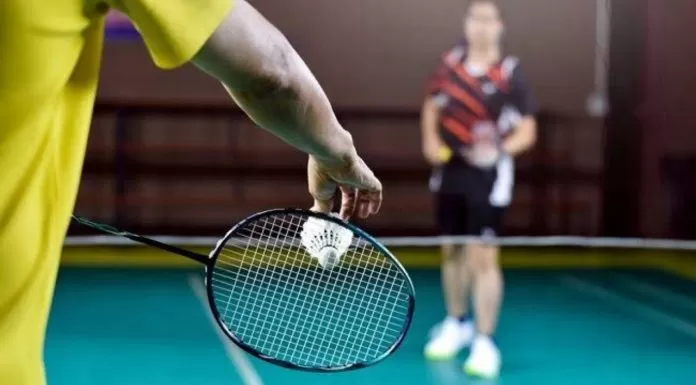

Details

More details about Badminton
-Grip Raket yang Tepat. ...
-Sikap atau Posisi Tubuh Selama Bermain. ...
-Gerak kaki (Footwork) ...
-Teknik Servis (Serve) ...
-Teknik Smes (Smash) ...
-Permainan di Dekat Net (Netting) ...
-Overhead. ...
-Lob Shot.
Tujuan Permainan
Memenangkan pertandingan dengan cara mencetak poin lebih banyak dari lawan